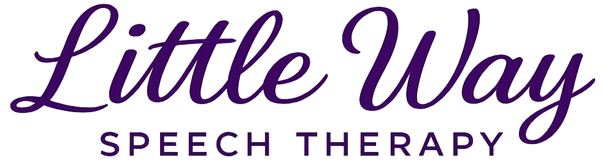

Nurturing Communication
with Care
Welcome
Little Way Speech Therapy provides compassionate, individualized speech and language services for children throughout San Diego County.
Services are offered both in-home and virtually, providing flexible, accessible support for every family.
"Kat brings great energy and enthusiasm to our home and our son loves working with her. She has given us clear things to work on between sessions and resources to use."
— Claire, mother of a 1-year-old"Kathleen Winger is amazing. My son is a very active young boy and is not easy to keep on task, but Miss Kat is so experienced that she is able to make practice both fun and educational. I feel so blessed to have her as his speech therapist."
— Amy, mother of a 5-year-old"We have been to several other speech providers but have finally found our home with Kat. Her consistency and kindness truly set her apart."
— Evelyn, mother of a 4-year-old"Ms. Winger is patient, kind, dedicated, and caring. She always helps with any concerns that arise and gives us helpful guidance. Since his first appointment, she has demonstrated professionalism and exceptional skill as a speech-language pathologist."
— Cee, mother of a 3-year-old"Kat is always so passionate and understanding. She has done an amazing job with my daughter's speech, and I would recommend her to anyone seeking help for their child."
— Bridget, mother of a 6-year-old"Kat not only helps during sessions — she goes out of her way to program my son's AAC device remotely and gets it done extremely quickly. She is an indispensable part of his team, and it is evident that she truly loves her work."
— Yanina, mother of a 13-year-old"We absolutely love our speech therapist Kat. We have done speech therapy at other places, and I can honestly say she is the best. My daughter loves her sessions and looks forward to every visit."
— Sonia, mother of a 4-year-old"Our son's total word count has already expanded in the few weeks we have been working with Kat. We are so grateful for her help and expertise."
— Claire, mother of a 2-year-old"Miss Kat has been fantastic with my son. He was very shy for a long time and she has always been so patient, warm, and welcoming with him."
— Katy, mother of a 6-year-old"My child has been in speech therapy for many years, and finding Kathleen Winger felt like our prayers were answered. She is amazing and has the sweetest heart — my child adores her."
— Letecia, mother of a 4-year-old"Kat has been fantastic. She is knowledgeable, flexible, easy to communicate with, and my son loves her. She has worked hard and helped him make significant improvements in his speech and communication."
— Amy, mother of a 5-year-old"You can immediately feel how much Kat loves helping children. She was genuinely interested in our goals and respectfully listened to my feedback. I have always had a great outcome with her at the helm."
— Leslie, mother of a 4-year-oldSupport For Your Child
Early Intervention
Play-based, family-centered therapy for infants and toddlers to support early communication, connection, and development.
Speech & Language Therapy
Individualized therapy for children needing support with articulation, language, fluency, social communication, and more.
Comprehensive Evaluations
In-depth assessments to understand your child's strengths and needs, guiding clear and meaningful next steps.
"What matters in life is not great deeds, but great love."
Take the First Step
If you have questions about your child's communication, let's start a conversation.
Contact Us